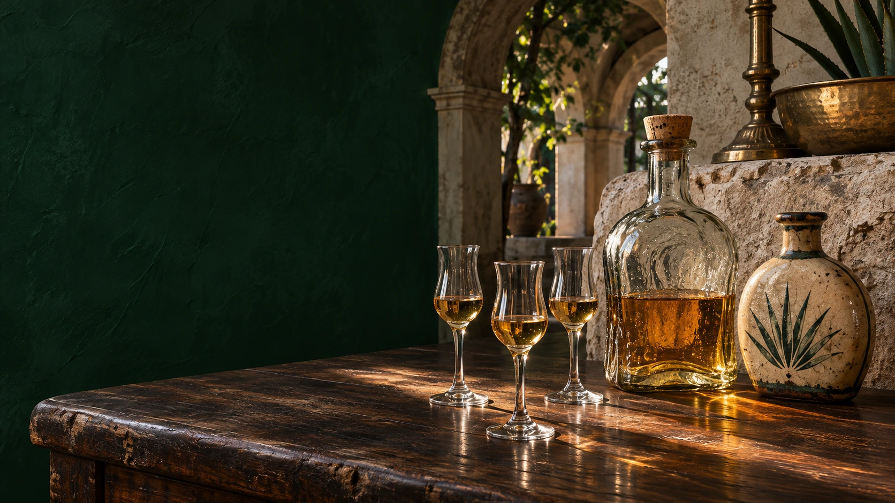

Dzibilchaltún · Yucatán
La tierra
La tierra
de la casa.
Al norte de Mérida, Jesús Retana guarda una colección de tequila que se conoce mejor sentado a su mesa.
Mirar de cerca ↓
La casa y su entorno
Lo que cuenta la piedra.
La Ex-hacienda Dzibilchaltún queda a unos pasos de la colección. Dentro de la cava, la luz recorre la piedra irregular detrás de los estantes. De esa pared que Jesús conoce tan bien salen el marfil, el cobre y las sombras de esta edición.
Ver la casa en el video original ↗En Yucatán, las hojas del henequén han dado fibra durante generaciones. Esa fibra inspira las líneas finas del papel y la invitación a la mesa. En el emblema familiar, la R permanece abrazada por las pencas del agave.
Leer la dedicatoria de Jesús ↗
Piedra claraHoja de henequénCobre de la barraSombra del estante

La sobremesaUna botella,
Una botella,
dos lugares.
El pasaporte cuenta dónde se hizo la botella. La mesa cuenta cómo llegó hasta Yucatán y por qué Jesús quiso guardarla. Puedes empezar la visita por cualquiera de los dos.